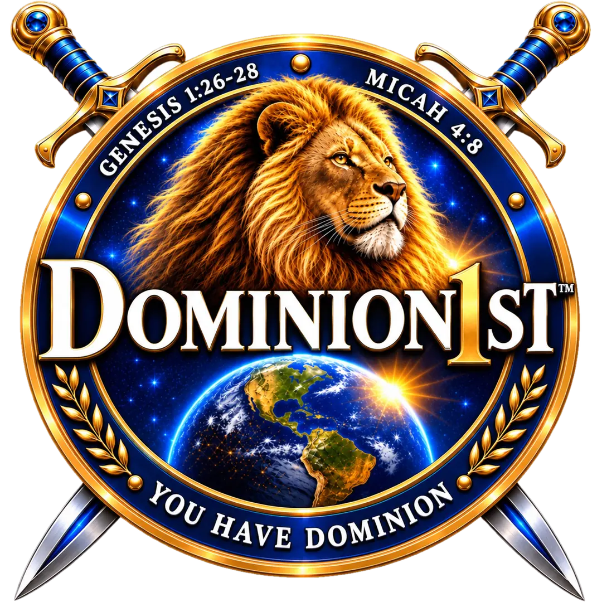

KINGDOM IDENTITY • AUTHORITY • PURPOSE
YOU HAVE
DOMINION.
Know who you are. Understand what you carry. Live from the position God has given you.
ENTER DOMINION1ST ↓
Dominion1st™KINGDOM IDENTITY • AUTHORITY • PURPOSE
Know who you are. Understand what you carry. Live from the position God has given you.
ENTER DOMINION1ST ↓THE DOMINION FOUNDATION
Dominion1st equips believers to move from revelation to application—from knowing truth to living it.
EXPLORE DOMINION1ST
DOMINION1ST™